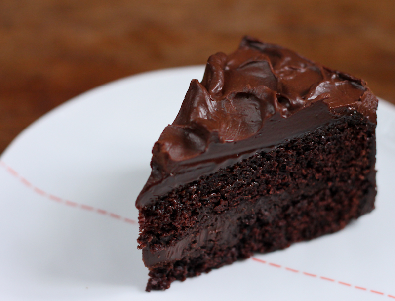

What I love ?
The best way to become a better reader is to read read and read. I'm a big fan of books. No specific genre that I'm tilted towards. My favourites are usually those feel good books that give you a different perspective of life. So read to joy !! :)

That is the best part of the day isn't it? I wouldn't say I can eat a load at a time but I definitely do crave loads. Especially anything chocolaty or cheesy..Being a south Indian my constant is curd rice. Food sure is one true love !!
The most beautiful creation of god is rain. The smelll of soil, the chill slow breeze and the rustle of wind against leaves is the only exampls of beauty creating beauty.